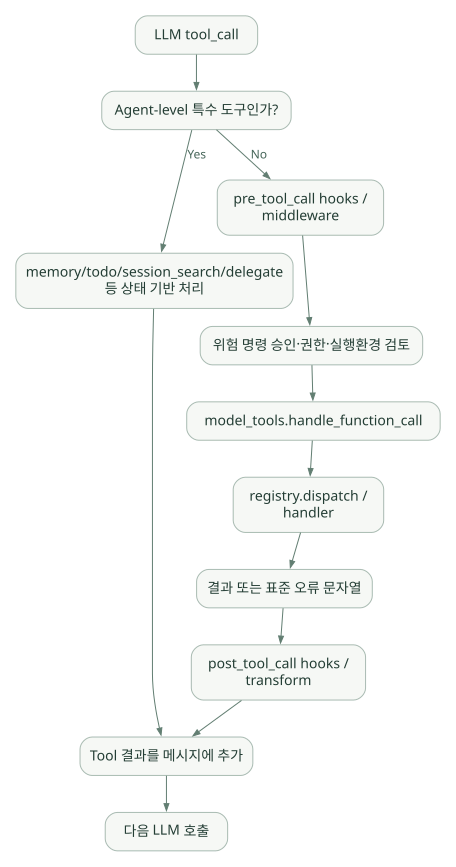
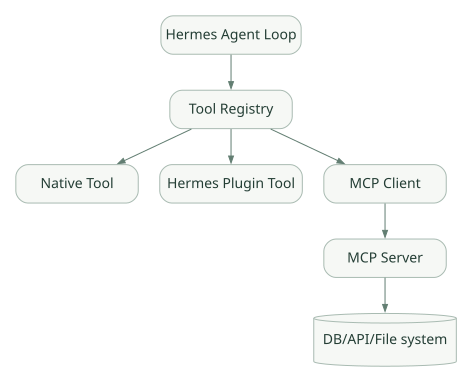

핵심 원리 / 단원 06
도구 요청을 실제 함수로 연결하기
모델이 보는 계약과 실제 Handler의 책임
먼저 연결해 보기
모델에게 보이는 Tool Schema는 함수의 이름과 인자를 설명하는 계약입니다. 실제 작업은 Handler가 수행합니다. Registry는 이 연결을 관리하고, Toolset은 관련 도구의 노출 범위를 묶어 제어합니다.
MCP와 Plugin은 도구를 확장하는 서로 다른 연결 방식입니다. MCP는 외부 서버의 기능을 연결하고, Plugin은 Hermes 런타임에 Tool이나 Hook을 추가할 수 있습니다. 이 구분을 먼저 잡으면 아래 등록 코드와 실행 흐름을 읽기 쉽습니다. Schema가 정확하더라도 실제 데이터 접근권한은 백엔드에서 강제해야 한다는 조건을 놓치지 마세요.
읽는 관점“도구를 설명하는 것”, “등록하는 것”, “실행을 허용하는 것”은 각각 어느 계층의 책임인가요?
11. Tool Runtime과 Registry: 실제 함수가 실행되는 경로#
11.1 Tool, Toolset, MCP, Skill을 구분하자#
| 이름 | 무엇인가? | 예시 |
|---|---|---|
| Tool | LLM이 호출할 수 있는 개별 기능 | read_file, terminal |
| Toolset | 관련 Tool들을 묶어 활성/비활성화하는 단위 | file/terminal 계열 |
| MCP | 외부 Tool 제공 서버와 통신하는 표준 연결 방식 | 조직 내부 DB 조회 서버 |
| Plugin | Hermes 런타임에 자체 Tool/Hook을 등록하는 확장 | 사내 측정 API Tool |
| Skill | Tool들을 언제 어떻게 사용해야 할지 알려주는 절차 | 웨이퍼 이상 분석 SOP |
11.2 Registry의 등록 과정#
공식 Tools Runtime과 소스코드의 구조 S08, C04:
- 개별 Tool Python 모듈에서
registry.register(...)호출 - Registry가 이름, Toolset, 모델이 볼 JSON Schema, 실제 handler, 사용 가능성 검사를 보관
- 모듈 Discovery가 등록 코드를 가진 모듈을 찾고 import
- 활성 Toolset/환경/
check_fn을 통과한 도구의 스키마만 모델에 전달 - LLM의 Tool Call이 들어오면 이름을 handler에 매핑하여 실행
실제 소스의 주요 시그니처 일부 (tools/registry.py, 가독성을 위해 일부 선택):
# [코드] 원본 ToolRegistry.register() 시그니처 중 핵심 인자만 발췌
# 전체 시그니처 및 구현: https://github.com/NousResearch/hermes-agent/blob/main/tools/registry.py
def register(self, name: str, toolset: str, schema: dict, handler,
check_fn=None, requires_env=None, is_async: bool = False, ...):
...이 예시에서 ...는 생략을 뜻하고, 실제 복사 실행 가능한 함수 정의가 아니다. 중요한 필드는 schema가 LLM에 보이는 계약, handler가 실행 함수, check_fn이 도구 가용성 조건이라는 점이다.
11.3 Tool 등록 의사코드#
# [예시] 읽기 전용 측정값 조회 Tool의 개념을 보여주는 의사코드
registry.register(
name="get_measurement_summary",
toolset="semiconductor_readonly",
schema={
"name": "get_measurement_summary",
"description": "승인된 데이터의 측정 통계만 조회",
"parameters": {
"type": "object",
"properties": {"dataset_id": {"type": "string"}},
"required": ["dataset_id"]
}
},
handler=approved_readonly_handler,
check_fn=read_only_api_is_configured
)실제 통합은 Plugin API 등 확장 경로의 정확한 시그니처에 맞춰 구현해야 한다. LLM에 보이는 Tool Schema를 잘 정의해야 오호출을 줄일 수 있지만, Schema 자체가 데이터 접근 권한을 강제하는 보안 장치는 아니다. 백엔드에서 권한·필터·결과 크기를 검증해야 한다.
11.4 Tool 실행 시퀀스와 에러 처리#
넓은 도식은 가로로 스크롤하여 읽을 수 있습니다.

[개념도] 원문의 연결 관계를 보존해 다시 배치했습니다. 실제 구현의 모든 호출·보안 경계를 표시한 그림은 아닙니다. 도식 크게 보기 ↗
연결 관계 원문 (Mermaid)
flowchart TD
A[LLM tool_call] --> B[Agent-level 특수 도구인가?]
B -- Yes --> C[memory/todo/session_search/delegate 등 상태 기반 처리]
B -- No --> D[pre_tool_call hooks / middleware]
D --> E[위험 명령 승인·권한·실행환경 검토]
E --> F[model_tools.handle_function_call]
F --> G[registry.dispatch / handler]
G --> H[결과 또는 표준 오류 문자열]
H --> I[post_tool_call hooks / transform]
I --> J[Tool 결과를 메시지에 추가]
C --> J
J --> K[다음 LLM 호출]model_tools.handle_function_call()은 Tool Call 인자를 처리하고 Middleware/Hook을 거쳐 Registry로 라우팅하는 실제 함수다. registry.dispatch()와 상위 핸들러의 예외 처리는 도구 호출 실패를 모델에 전달 가능한 오류 결과로 감싸는 역할을 한다. 에러가 모델에 돌아온다고 해서 작업 성공이 보장되는 것은 아니다. S08, C03
11.5 Agent-level 특수 도구#
memory, session_search, delegate_task, 할 일 관리 도구는 단순한 외부 함수가 아니라 현재 AIAgent의 세션·MemoryStore·TodoStore 같은 내부 상태에 접근해야 하므로 Agent Loop에서 일반 dispatch 전에 별도 처리될 수 있다. 이것이 'Tool Schema만 등록하면 모든 것을 구현할 수 있다'고 볼 수 없는 이유다. S04, S08
12. MCP·Plugins·Code Execution의 관계#
12.1 MCP는 Tool의 공급 경로이지 Agent Loop의 대체재가 아니다#
넓은 도식은 가로로 스크롤하여 읽을 수 있습니다.

[개념도] 원문의 연결 관계를 보존해 다시 배치했습니다. 실제 구현의 모든 호출·보안 경계를 표시한 그림은 아닙니다. 도식 크게 보기 ↗
연결 관계 원문 (Mermaid)
flowchart LR
A[Hermes Agent Loop] --> B[Tool Registry]
B --> C[Native Tool]
B --> D[Hermes Plugin Tool]
B --> E[MCP Client]
E --> F[MCP Server]
F --> G[(DB/API/File system)]MCP Server는 외부 기능을 제공하고, Hermes는 MCP Client로 연결한다. Hermes의 문서는 로컬 stdio 및 원격 HTTP MCP 서버 설정, 도구 자동 발견, 서버별 Tool 필터링을 지원한다고 설명한다. S13
# [공식 문서 구조의 설명용 예시] 직접 설치·실행하지 않음
mcp_servers:
internal_measurement:
command: "python"
args: ["/approved/tools/read_only_mcp_server.py"]위 구성의 스크립트는 가상의 사내 MCP 서버 경로다. 설정 예시일 뿐 해당 파일이나 서버가 존재한다는 뜻이 아니다. 조직의 MCP 보안·인증·권한 정책을 우선 확인해야 한다.
12.2 Hermes Plugin과 MCP 중 무엇을 선택하나?#
| 기준 | Hermes Plugin | 외부 MCP Server |
|---|---|---|
| 실행 위치 | Hermes Python 확장과 결합 | 별도 프로세스/서비스 가능 |
| 확장 언어 | 주로 Hermes의 Python 구조 | MCP 프로토콜을 구현하는 다양한 언어 |
| 결합도 | Hermes 내부 API에 더 밀착 | 표준 프로토콜 기반, 상대적으로 느슨함 |
| 공유성 | Hermes 사용자/프로필 중심 | 여러 Agent Client에서 재사용 가능 |
| 권한 통제 | Hermes + Handler 구현에 의존 | Hermes + MCP 서버 양쪽에서 통제 가능 |
반도체 공정 조회 기능을 여러 Agent 프레임워크와 비교할 계획이라면 같은 읽기 전용 MCP 서버를 모든 프레임워크가 공유하게 만드는 편이 이후 공정한 비교에 유리할 수 있다. [해석]
12.3 Plugin 구조와 Hooks#
공식 Plugin 문서의 기본 구조 S12:
~/.hermes/plugins/example/
├── plugin.yaml
├── __init__.py # register(ctx)
├── schemas.py
└── tools.pyPlugin은 ctx.register_tool(...)로 Tool을, ctx.register_hook(...)로 실행 전후 이벤트 처리기를 추가할 수 있다. pre_tool_call, post_tool_call과 같은 Hook은 로깅, 추가 허용 정책, 실행 측정 등을 구현하는 접점이다.
주의: Hook이 호출된다고 모든 보안이 자동으로 적용되는 것은 아니다. 외부 서비스에 대한 리소스 기반 접근제어, SQL 쿼리 제한, 네트워크 egress 제한, 비밀정보 마스킹은 별도 설계가 필요하다.
12.4 Code Execution은 어디에 놓이나?#
일반 Tool Calling은 모델이 Tool별 인자를 작성한다. 코드 실행 방식은 Agent가 Python 스크립트 형태로 여러 단계를 계획하고 이를 실행환경에서 수행하도록 하는 방식이다. Hermes의 execute_code는 도구 접근이 가능한 샌드박스/RPC 경로를 제공할 수 있다. S01, S08
도메인 데이터가 중요하다면 임의 Python 실행과 사전 승인된 집계 Tool의 위험도를 구분해야 한다. 초기에 임의 실행 대신 후자를 우선하고, 필요할 때만 격리된 컨테이너·CPU/메모리·시간 제한을 갖춘 코드 실행을 허용하는 방향이 좋다.